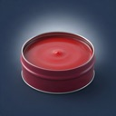
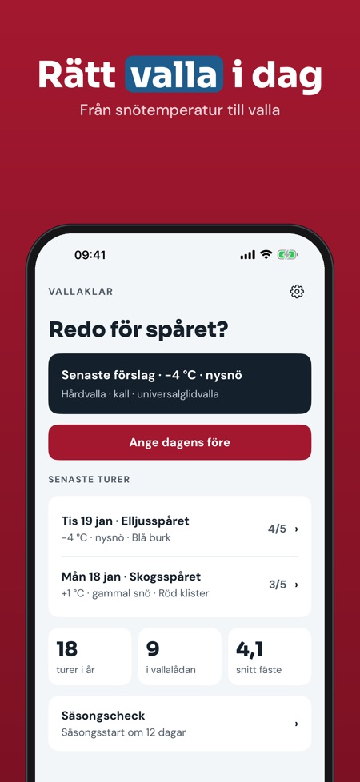
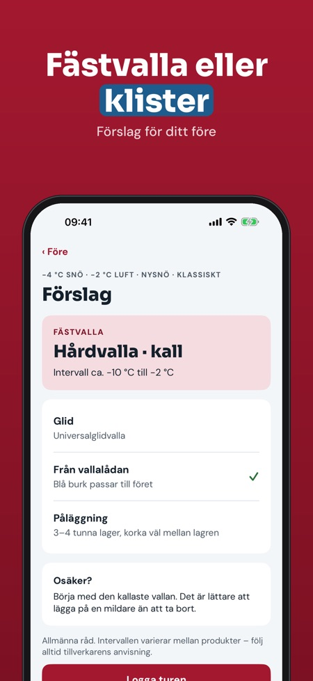
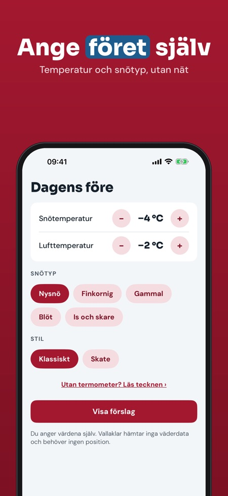

Fästvalla, klister och glid. Ange snötemperatur och före och få rätt vallaklass – fästvalla eller klister. Med vallalåda och vallalogg, även utan nät i spåret.



Vallaklar hjälper dig att välja valla för längdskidor: du anger snötemperatur, lufttemperatur och snötyp och får förslag på vallaklass för fäste och glid.
Förslag för kallt före, 5 vallor i vallalådan och tips utan termometer kan användas utan köp. Fullversionen är ett engångsköp som låser upp alla typer av före, klisterguide, obegränsad logg och säsongscheck. Ingen prenumeration.
Vallaklar ger allmänna råd och är inte knuten till något vallamärke. Följ alltid tillverkarens anvisning. Appen hämtar inga väderdata.